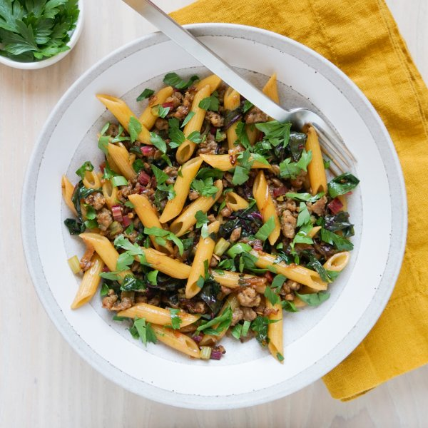

Penne with Pork Sausage, Caramelized Onion, Fennel & Swiss Chard

Total Time
35 min
Nutrition (per serving)
701.3 kcalCalories
28.6 gProtein
73.1 gCarbs
33.6 gFat
Full nutrition table
| Calories | 701.3 kcal |
| Total fat | 33.6 g |
| Saturated fat | 10.6 g |
| Trans fat | 0.1 g |
| Cholesterol | 71.4 mg |
| Sodium | 1151 mg |
| Carbohydrates | 73.1 g |
| Fiber | 8.3 g |
| Sugars | 8.8 g |
| Protein | 28.6 g |
| Potassium | 1446.4 mg |
| Calcium | 168.2 mg |
| Iron | 7.4 mg |
| Vitamin A | 5200.6 IU |
| Vitamin C | 62.2 mg |
| Vitamin D | 1.7 IU |
Cookware
Ingredients
- 2fennel bulbs
- 2 clovesgarlic
- 1 lbground pork sausage
- 1 small bunchItalian (flat-leaf) parsley
- 10 ozpenne pasta
- 1 bunchSwiss chard
- 1 mediumyellow onion
- crushed red pepper
- extra virgin olive oil
- red wine vinegar
- salt
Steps
- Fill a large pot halfway with hot water (from the tap), cover, and bring to a boil. Uncover, add salt and pasta, and stir for a few seconds. Cook until desired firmness, 8-10 minutes. (Reserve 1 cup of pasta cooking water before draining.)1 tsp salt
10 oz penne pasta - Meanwhile, wash and dry the fresh produce.2 fennel bulbs
1 bunch Swiss chard
1 small bunch Italian (flat-leaf) parsley - Trim off root end and stalks of the fennel, leaving only the white bulbs. Cut fennel in half lengthwise, then slice crosswise into thin half-moons. Place in a medium bowl.
- Preheat a large skillet over medium heat.
- While the skillet heats up, peel, halve, and slice onion crosswise into thin half-moons. Add to the bowl with the fennel.1 medium yellow onion
- Once the skillet is hot, add oil and swirl to coat the bottom. Add fennel, onion, and salt; cook, stirring occasionally, until soft and starting to brown, 6-8 minutes. (Reserve bowl for the next step.)1 tbsp extra virgin olive oil
½ tsp salt - Meanwhile, fold chard leaves in half lengthwise and slice off the stems. Cut leaves crosswise into thin (shred-like) strips and thinly slice the stems, keeping them separate. Place leaves in the reserved medium bowl and stems in a small bowl.
- Shave parsley leaves off the stems; discard stems and roughly chop the leaves. Add half to the bowl with the chard leaves and set aside. (Set remaining parsley aside for serving.)
- Peel and thinly slice garlic. Add to the bowl with the chard stems.2 cloves garlic
- Once the fennel and onion are soft, add the sausage. Cook, breaking it apart with a spoon, until browned and crumbly, 4-5 minutes.1 lb ground pork sausage
- Add chard stems, garlic, and crushed red pepper to the skillet. Cook, stirring frequently, until fragrant, about 1 minute.½ tsp crushed red pepper
- Add drained pasta, reserved pasta water, and vinegar to the skillet. Continue to cook, stirring frequently, until heated through, 1-2 minutes more.2 tsp red wine vinegar
- Add chard leaves and parsley to the skillet in handfuls, waiting for the greens to wilt slightly before adding the next handful. Cook, stirring occasionally, until the chard is tender, 30-60 seconds. Remove from heat.
- To serve, divide pasta between plates or bowls and top with reserved parsley. Enjoy!